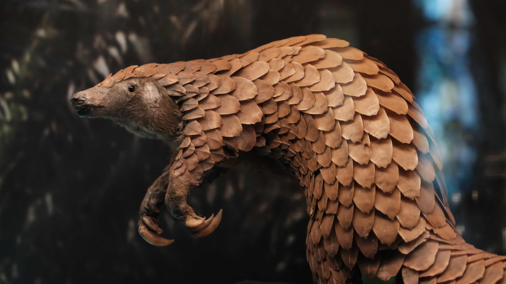

<div class="container mx-auto lg:h-screen flex flex-col justify-center items-center">
  <h1>
    The Ministry of <br />
    <strong class="bg-clip-text text-transparent bg-gradient-to-r from-blue-500 to-purple-500">
      {{title}}
    </strong>
  </h1>

  <br />
  

  <p>
    <br>
    What else has both a
    <code class="bg-gray-100 text-blue-800 p-1">Tail</code>
    and
    <code class="bg-gray-100 text-blue-800 p-1">Scales?</code>
  </p>

  {% include "./_includes/partials/content.html" %}
</div>